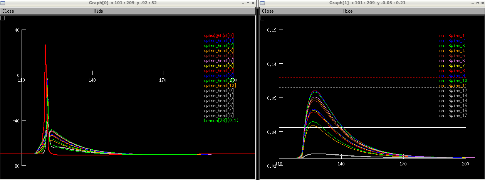

NEURON hoc, mod and python files for the model: Sergio Solinas, Elke Edelmann, Volkmar Leßmann, Michele Migliore 2018 "A kinetic model for synaptic transmission and Brain-Derived Neurotrophic Factor mediated spike timing-dependent plasticity in hippocampal CA1 neurons"
The model shows how the back-propagating action potentials in the oblique dendrites of CA1 neurons collide at the spines with a locally elicited EPSP to trigger the release of a retrograde messenger or Brain-Derived Neurotrophic Factor inducing the late expression of spike timing-dependent plasticity.
This model should run in python version 2.7 and 3.7.
Dependencies: hdf5 and h5py
How to install: follow instructions on
http://docs.h5py.org/en/stable/build.html
Make sure you compile the mod files in mod_files before running with mknrndll (mswin and mac os x) or nrnivmodl (unix/linux). If you need more help running the model on your platform please consult: https://senselab.med.yale.edu/ModelDB/NEURON_DwnldGuide.cshtml
In order to reproduce Fig.3A and 3B of the paper run:
python -i run_GUI.py
or
nrngui -python run_GUI.py
From the GUI press the "LTP11" botton, then the "Set to run short sim" botton, and then hit the "Init&Run" botton in the "RunControl" panel.

In order to reproduce Fig.3C and 3D of the paper run:
python -i run_GUI.py
or
nrngui -python run_GUI.py
From the GUI press the "LTP11" botton, then the "Set to run long sim" botton, and then hit the "Init&Run" botton in the "RunControl" panel. The simulation should take about 4 hours on a 2.0Ghz cpu if the graphs are hidden (i.e. presse the HIDE botton on each window, to visualize them again use the scroll down menu Windows from the neuron_main_menu).
In order to reproduce Fig.4A and 4B of the paper run:
python -i run_GUI.py
or
nrngui -python run_GUI.py
From the GUI press the "LTP14" botton, then the "Set to run short sim" botton, and then hit the "Init&Run" botton in the "RunControl" panel.
In order to reproduce Fig.4C and 4D of the paper run:
python -i run_GUI.py
or
nrngui -python run_GUI.py
From the GUI press the "LTP14" botton, then the "Set to run long sim" botton, and then hit the "Init&Run" botton in the "RunControl" panel. The simulation should take about 4 hours on a 2.0Ghz cpu if the graphs are hidden (i.e. presse the HIDE botton on each window, to visualize them again use the scroll down menu Windows from the neuron_main_menu).
Under unix systems:
to compile the mod files use the command
nrnivmodl mod_files/
To run long simulations of multiple protocols in parallel use: Start_parallel.sh [num_cpus] [dest_dir] This requires the NEURON software to be compile for parallel simulations. It runs without GUI, configuration in parameters.py.
Questions on how to use this model
should be directed to michele.migliore at pa.ibf.cnr.it
Questions on how to modifiy or run this
model should be addressed to smgsolinas at gmail.com
Changelog
===
2022-07: Updated MOD files to contain valid C++ and be compatible with the upcoming versions 8.2 and 9.0 of NEURON.